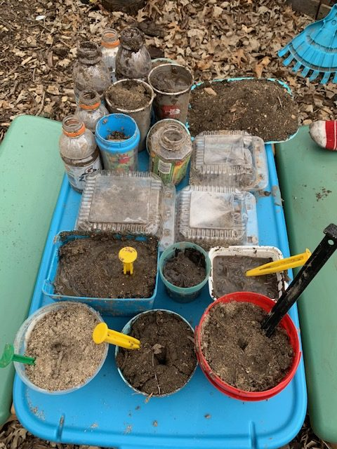

Pie #3: Mud Pie
[Return to Homepage] <---[Previous Pie: Shepherd's]

Compose pie of soil. Eat it because you want to but not because I told you to
Ingredients:
- Soil
- Water
- Dead leaves
- Dead grass
- Optional: Other groundstuffs
Yield:
As much as the bucket can handle
Directions:
- Find yourself a bucket or other container capable of dirt
- Fill container with soil of choice. I like more clay in mine
but it is a matter of personal preference
- Add water in accordance to personal taste however you will surely
need some to maintain pie integrity
- Mix soil and water with hands or implement. Splash in more water until
desired consistency
- Take desired portion size handfuls of mixture from bucket, shape into
pies
- Repeat previous step until bucket empty
- Leave portioned pies to sundry, or put them in oven(?)
- Garnish with leaves and grass, or whatever you think belongs on mud